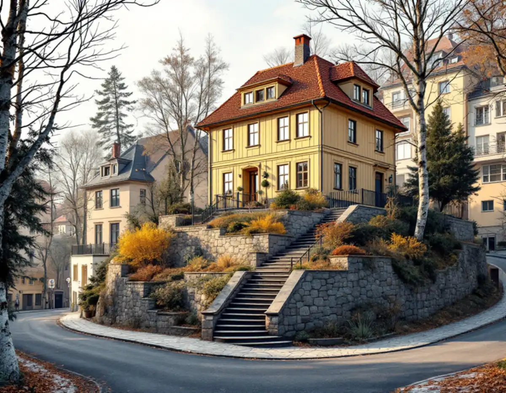
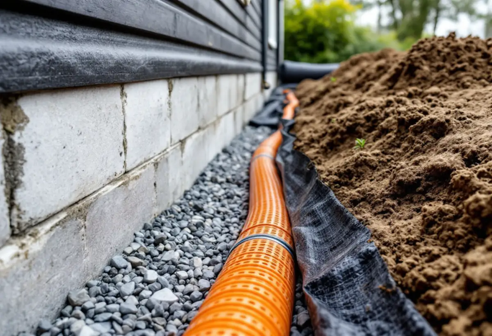

Platsbesök
Vi går runt huset, tittar på slänter, murar och var vattnet tar vägen.
I Mälarhöjden följer gatorna terrängen. Den som bygger till, gör en ny entré eller lägger om marken runt huset på en kuperad tomt får därför ofta lika mycket arbete under mark som ovanför. Geal Entreprenad AB tar sådana projekt som total entreprenad, och här går vi igenom vad Stockholms stad kräver när marken ska ändras.

I stadens vägledning Varsam utveckling av småhus- och villaområden räknas Mälarhöjden till villastäderna. Där beskrivs hur villasamhällena kring Bromma kyrka och i Mälarhöjden växte upp efter privata initiativ genom större markförvärv, och hur de första stadsplanerna ofta gav ett slingrande nät av smala gator som följde terrängen. Höjdpartier inom kvarteren lämnades ofta obebyggda.
Vägledningen nämner Mälarhöjden bland de områden där äldre stadsplaner tillåter generösa byggrätter. Enligt stadens områdesfakta fanns 1 086 bostäder i småhus i Mälarhöjden 2025, och 988 av dem var äganderätter. Det är alltså oftast villaägaren själv som är byggherre, med det ansvar för marken som följer med.
För villastaden pekar vägledningen ut byggnaders anpassning till terrängen som en av de aspekter som påverkar mest vid förändring. Den som har en kuperad tomt ska enligt staden anpassa byggnaden till befintlig terräng, och därför börjar vi med höjderna innan något ritas.

Inom detaljplan krävs marklov om höjdläget ändras mer än 0,5 meter uppåt eller nedåt. En tillbyggnad på en sluttande tomt kan därför behöva både bygglov för huset och prövning av schaktning och fyllning runt det. Detaljplanen kan dessutom kräva marklov för trädfällning eller för åtgärder som försämrar markens genomsläpplighet.
Till bygglovet för en ny byggnad eller en tillbyggnad kan staden vilja ha en markplaneringsritning i skala 1:200. Den visar husets placering och hur marken planeras med markhöjder, uppfyllnader och schaktningar, slänter, murar, infart och parkering, och hur vatten, avlopp och dagvatten ordnas. Ska marknivån ändras mer än 50 centimeter behövs också en marksektionsritning med marknivåerna i genomskärning och avståndet till fastighetsgränsen.
Fasadritningen ska enligt staden visa både befintliga och nya marknivåer. Därför mäter vi in tomten tidigt, så att plan, fasad, sektion och mark stämmer med varandra när handlingarna lämnas in. Staden kräver att alla ritningar stämmer överens och skriver att det tar längre tid innan du får besked om handlingarna måste kompletteras.
Staden skiljer på en mur, som avgränsar till exempel en fastighet, och en stödmur, som är motfylld på ena sidan och håller upp jordmassor. Bygglov krävs om muren är högre än 1,8 meter och står inom 3,6 meter från en byggnad, eller högre än 1,2 meter längre bort. Står ett plank eller en altan på muren är det den sammanlagda höjden som räknas.
En mur över 1,2 meter ska stå minst 4,5 meter från tomtgränsen, annars krävs ett skriftligt medgivande från de grannar som berörs. Är förutsättningarna för lovbefrielse inte uppfyllda krävs bygglov redan för en mur som är högre än 0,5 meter. Även lägre murar kan kräva lov om de bedöms påverka områdets karaktär. Hur muren ska grundläggas och dräneras bakom är en fråga för konstruktionen, och den tar vi med i kostnadsförslaget.
Att dränera kräver inget marklov, så länge marknivån inte ändras permanent mer än 0,5 meter. En anmälan behövs om dräneringen innebär en väsentlig ändring av anläggningen för vattenförsörjning eller avlopp. Dagvattnet ska tas om hand inom den egna fastigheten och får inte ledas till en granne, vilket på en sluttning ofta avgör var vattnet kan släppas ut.
Innan vi gräver tar vi reda på var ledningarna går. Staden hänvisar till e-tjänsten Ledningskollen, där alla ledningsägare i området kan svara. Arbete på stadens mark, till exempel i gatan utanför tomten, kräver tillstånd från trafikkontoret. Läs mer om tillbyggnad och om husets fasad i fasadrenovering i Hägersten.
Vi går runt huset, tittar på slänter, murar och var vattnet tar vägen.
Tomten mäts in och ledningarna kontrolleras via Ledningskollen.
Planen visar om det blir marklov, bygglov eller anmälan.
Schakt, dränering, murar och återställning redovisas var för sig.
En kontakt för grävning, mur, grund och hus.
Höjder och ledningar dokumenteras när marken är återställd.
Rotavdraget är 30 procent av arbetskostnaden, högst 50 000 kronor per person och år och högst 75 000 kronor tillsammans med rutavdrag. Material och resor ger inget avdrag, och du ska äga bostaden när arbetet utförs.
Skatteverket godkänner att dränera husgrunder i ett småhus. Markarbete i övrigt ger avdrag när det syftar till att utöka bostadsytan eller försörja bostaden med värme, vatten, avlopp, el eller elektronisk kommunikation. Att bygga staket och murar ger inget avdrag. Vi drar av rotavdraget direkt på fakturan.
Hur mycket jord och berg som ska flyttas, murarnas höjd och hur långt dagvattnet måste ledas väger tyngst. Efter ett gratis platsbesök får du ett skriftligt kostnadsförslag.
Total entreprenad för villan.
Byggfirma →Takbyte, takbesiktning och plåtarbeten.
Takläggare i Hägersten →Mälarhöjden, Hägerstensåsen och tre epoker av villor.
Takrenovering i Hägersten →Kuperad villastad och vattentryck.
Attefallshus i Hägersten →Bostadsrätten, golvbrunnen och fallet.
Badrumsrenovering i Hägersten →Trävillor, färglager och skonsam färgborttagning.
Fasadmålning i Hägersten →Småstugor, typritningar och panel.
Fasadrenovering i Hägersten →Villorna, kartan och spröjsen.
Fönsterbyte i Hägersten →Fönster från olika epoker.
Fönsterrenovering i Hägersten →Golv i källare och suterrängvåning.
Golvläggare i Hägersten →Slipa och spara parketten i en äldre lägenhet.
Golvslipning i Hägersten →Efterkrigstidens lägenheter och asbestprov.
Köksrenovering i Hägersten →Lägenheter, villor vid Mälaren och radhus.
Målare i Hägersten →Låglutande tak och takavvattning i Hägersten.
Plåtslagare i Hägersten →Verandor, dörrar och snickeridetaljer på villan.
Snickare i Hägersten →Samma material eller ett nytt.
Takbyte i Hägersten →Villastad, radhuslänga och brandskydd.
Tillbyggnad i Hägersten →Villan i Mälarhöjden eller lägenheten.
Totalrenovering i Hägersten →